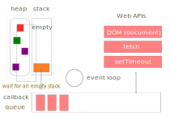
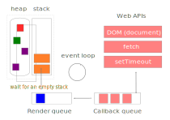

Всякий код, имеющий функции высшего порядка может быть асинхронным, но для создания аснхроности требуется кое-что еще...
Асинхронность реализуется при работе с браузером и nodejs за счет Event Loop - цикла, отслеживающего события. Event Loop - это не свойство ES6, а реализация возможностей языка JS.
Асинхронность - это выполнение кода после потока выполнения. Т.е. после того, как стек вызовов полностью освобождается, в этот стек поступает код из Event Loop.
Начало выполения программы.
Стек выполняет код из потока.
События из Web Api обрабатываются параллельно:
Callback попадает в стек и становитя кодом стека. Очередь ожидает завершения выполнения этого кода.
Видео от Филипа Робертса об Event Loop
Программа Loop Филипа Робертса
Джейк Арчибальд об Event Loop, requestAnimationFrame, mictotadtks
Из callback queue вход в стек разрешен только при пустом стеке. А значит callback входят по одому, ожидая опустошения стека.
Приблизительно один раз в 60 секунд браузер блокирует очередь событий. Другая очередь, имеющая более высокий приоритет, ожидает освобождения стека, чтобы отрисовать окно браузера.
Создание строгой последовательности выполнения - один callback перед одним браузерным обновлением экрана делает анимацию плавной. Существенно снижает нагрузку на браузер. Нельзя использовать для часов и таймеров, т.к. отображение будет с задержкой.